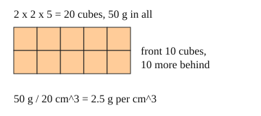

Part of Density. Answer in the chat (1: ..., g: c), add sure or guess after any answer, and say done when finished.
Last time: a 2 cm by 2 cm by 5 cm block has a mass of 50 g. How many grams is each cubic centimetre? You said c) 50. It is b) 2.5.

Is a gold ring heavier than a gold bar? Yes, but the gold is the same stuff. To compare materials, not objects, share the mass among the cubic centimetres: density is mass divided by volume, D = m / V, in g/cm^3 (notes 3). It does not change with the size of the piece (notes 4).
D = 50 g / 20 cm³ = 2.5 g/cm³
Q1. A stone has a volume of 50 cm^3 and a mass of 135 g. What is its density, in g/cm^3?
2.7
Q2. In your own words: why does a small piece of steel have the same density as a big piece of the same steel?
if the piece is twice as big it has twice the mass and twice the volume, so mass divided by volume comes out the same
Q3. Sam says a 1 kg block of wood is denser than a 100 g iron nail, because it has more mass. What is wrong?
density is mass per cm^3, not the total mass. the wood block takes up far more space, so each cm^3 of it has less mass than each cm^3 of the nail
A block has a volume of 10 cm^3 and a mass of 8 g. You drop it in water. What happens?
a (guess)